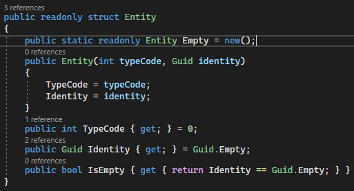
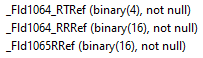
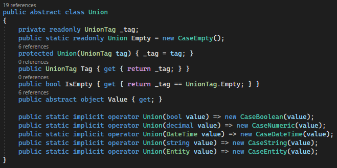
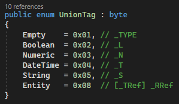
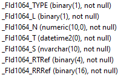

Анатомия метаданных 1С:Предприятие 8
Размещение данных 1С:Предприятия 8
Размещение данных 1С:Предприятия 8. Таблицы и поля
Особенности хранения составных типов данных
Язык запросов 1С:Предприятие 8 (1QL)
Провайдер данных является универсальным и поддерживает работу с базами данных 1С:Предприятие 8, использующих в качестве СУБД Microsoft SQL Server или PostgreSQL. Провайдер данных "понимает" с какой СУБД он работает в данный момент из соответствующей строки подключения к базе данных. Алгоритм этого "понимания" очень простой - если строка подключения начинается на "Host", то провайдер работает с PostgreSQL, иначе - SQL Server =)
Примеры строк подключения к базам данных 1С:Предприятие 8| SQL Server | Data Source=server_address;Initial Catalog=db_name;Integrated Security=True;Encrypt=False; |
| PostgreSQL | Host=127.0.0.1;Port=5432;Database=db_name;Username=postgres;Password=postgres; |
| 1С | C# | SQL Server | PostgreSQL |
| Неопределено | null | NULL | NULL |
| Булево | bool | binary(1) | boolean |
| Число | decimal | numeric | numeric |
| Дата | DateTime | datetime2 | timestamp without time zone |
| Строка | string | nvarchar | mvarchar |
| Ссылка | Entity | binary(16) | bytea |
| Составной тип | Union | Все выше перечисленные | Все выше перечисленные |
Провайдер данных .NET для 1С:Предприятие 8 отражает соответствующую систему типов, используемую самой платформой, а также её базами данных.
Помимо стандартных типов данных 1С:Предприятие 8 использует такие специфичные для этой платформы типы данных, как Ссылка (Entity) и Составной тип (Union).
Entity это структура данных, которая состоит из 2-х полей: код типа и идентификатор объекта. Данная структура является своеобразным указателем (ссылкой) на объект в базе данных. Структура Entity может иметь пустое значение, то есть не указывать на какой-то конкретный объект базы данных.
На C# данная структура объявлена так, как это показано на скриншоте ниже. В свою очередь в базе данных 1С это комбинация полей, имеющих постфиксы TRef (код типа) и RRef (идентификатор объекта). При этом в некоторых случаях постфикс TRef в целях оптимизации может отсутствовать. Провайдер данных все эти случаи учитывает и делает работу с этим типом данных прозрачной. Например, на правом скриншоте ниже поле Fld1064 имеет 2 поля: TRef и RRef, а поле Fld1065 - только одно.
Код типа - это число типа integer. Для того, чтобы получить описание объекта метаданных, соответствующего этому коду, можно воспользоваться методом GetMetadataItem(int typeCode) класса MetadataCache. Пример использования этого класса в этих целях будет приведён ниже.
Исходный код Entity.cs |
 |
 |
|
 |
 |